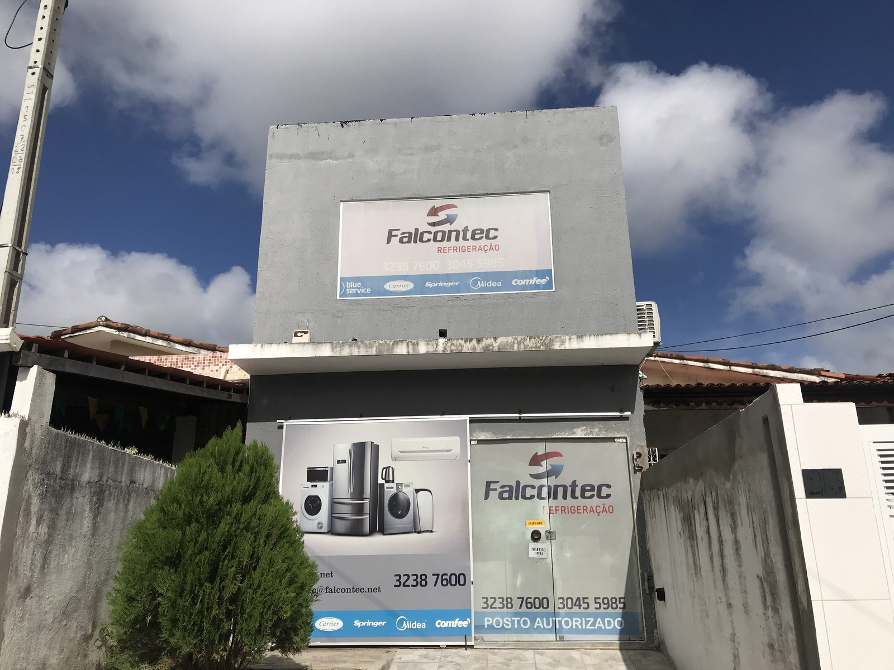

20 anos de atuação
Com duas décadas de atuação, a Falcontec Refrigeração trabalha com diferentes tipos de equipamentos, oferecendo serviços de reparo, manutenção preventiva e instalação.
Qualidade, agilidade e prontidão.
A Falcontec Refrigeração atua há 20 anos no segmento de refrigeração em geral.
A empresa realiza serviços de reparo, manutenção preventiva e instalação.
Nosso atendimento é baseado em qualidade, agilidade e prontidão.

Com duas décadas de atuação, a Falcontec Refrigeração trabalha com diferentes tipos de equipamentos, oferecendo serviços de reparo, manutenção preventiva e instalação.
A Falcontec Refrigeração trabalha com diferentes marcas, realizando serviços de reparo, manutenção preventiva e instalação.
A empresa também realiza atendimentos relacionados a serviços de garantia de marcas como WAP, Ventisol/Agratto, RED e Elgin.
A Falcontec trabalha com refrigeração em geral e atende diversos tipos de equipamentos.
Além desses equipamentos, a empresa também realiza atendimento em outros produtos de refrigeração e climatização.